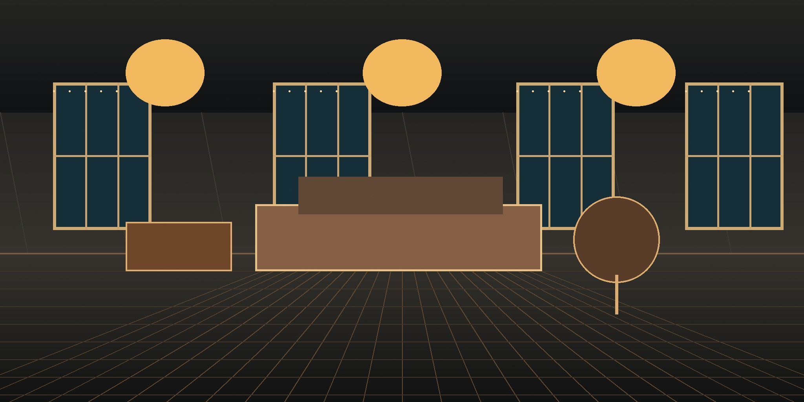
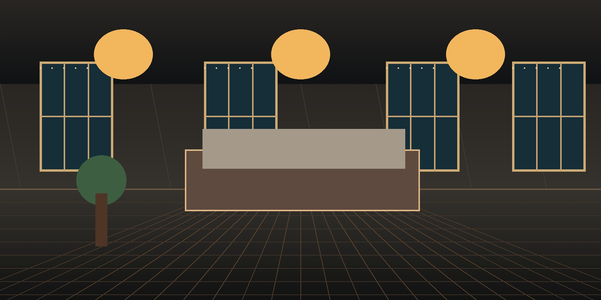
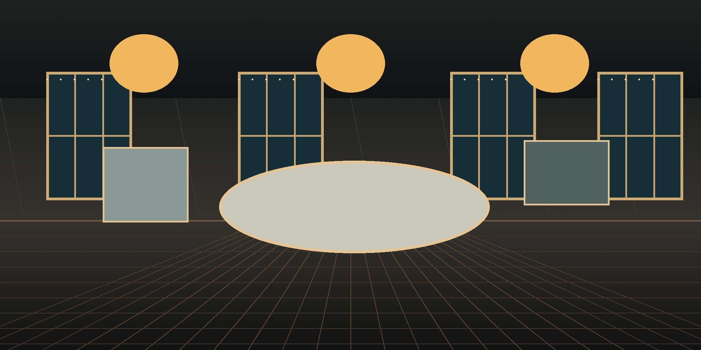

REAL-TIME 3D / OBJECT 024Настоящая
Настоящая
форма дома
Вращайте модель, приближайте фасад и рассматривайте архитектуру с разных сторон.
Загрузка 3D-модели…
Подготавливаем модель
 3D-модель временно недоступнаСмотреть интерьер
3D-модель временно недоступнаСмотреть интерьерПеретаскивайте · колесо / два пальца — масштаб
AI / PHOTO TO 3DФото в
Фото в
3D-модель
Загрузите одно фото предмета, фасада или мебели. Сервис построит объёмную GLB-модель, которую можно будет вращать прямо здесь.
Генерация займёт несколько минут
02 / ВИЗУАЛЬНЫЕ СЦЕНЫИнтерьер
Интерьер
будущего дома
Внешняя модель выше — лицензированный 3D-объект. Ниже — визуальные сцены материалов и помещений, которые можно использовать как основу дизайн-концепции.


